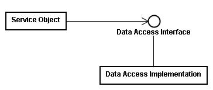
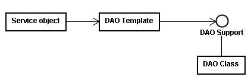

|
|
Spring
的DAO框架讓您在進行資料庫存取時，無須接觸到與所使用特定資料庫的技術相關細節，DAO的全名為Data Access
Object，在您的應用程式中，需要使用到資料存取時，是透過一個資料存取介面來操作，而實際上進行資料庫存取的物件要實作該介面，並在規範的方法之
中，實作存取時的相關細節。 舉個DAO的例子，假設您的應用程式中有個User物件，在進行資料庫存取時（例如find、insert、update、delete），您的應用程式不應依賴於一個實際的類別實作，而可以讓它依賴一個介面，例如一個IUserDAO介面： package onlyfun.caterpillar;
public interface IUserDAO { public void insert(User user); public User find(Integer id); public void update(User user); public void delete(User user); } 實際上進行資料庫存取的類別可以實作IUserDAO介面，例如定義一個簡單的UserDAO類別： package onlyfun.caterpillar;
... public class UserDAO implements IUserDAO { private DataSource dataSource; public void setDataSource(DataSource dataSource) { this.dataSource = dataSource; } public void insert(User user) { String name = user.getName(); int age = user.getAge().intValue(); Connection conn = null; Statement stmt = null; try { conn = dataSource.getConnection(); stmt = conn.createStatement(); stmt.execute("INSERT INTO user(name,age) VALUES(" + name + "," + age + ")"); } catch (SQLException e) { e.printStackTrace(); } finally { if(stmt != null) { try { stmt.close(); } catch(SQLException e) { e.printStackTrace(); } } if(conn != null) { try { conn.close(); } catch(SQLException e) { e.printStackTrace(); } } } } public User find(Integer id) { ... return null; } public void update(User user) { ... } public void delete(User user) { ... } } 您的應用程式主流程在進行資料存取時，可以使用IUserDAO來宣告操作介面，例如： ...
...User user = new User(); user.setName("caterpillar"); user.setAge(new Integer(30)); IUserDAO userDao = getUserDAO(); userDao.insert(user); 由於依賴於介面，所以您可以隨時替換IUserDAO的實作類別，而IUserDAO介面宣告的操作方法上，並沒有任何與底層資料庫存取的技術細節，Spring的DAO框架正是基於這樣的基本原理，將應用程式與底層存取技術隔離開來。  資料存取介面上只曝光與特定資料庫存取技術無關的相關方法（例如update、insert、delete等），設計上依賴於介面，程式也易於測試，也不讓您的應用程式受限於只能使用某一資料庫技術。 而在之前的示範程式中，事實上對於實際的資料庫存取流程來說，有幾個步驟是固定的，例如取得DataSource、取得Connection、處理例外 等，對於不同的資料庫技術，這些步驟大致上是相同的，只有少部份不同，Spring運用Template Method 模式，將固定的流程撰寫於Template類別之中（例如JdbcTemplate、HibernateTemplate類別），而對於不同的一些細節步 驟，則委託特定DAO支援物件來處理（例如需要事務處理時）：  在例外處理方面，Spring也提供了與特定技術無關的例外處理體系（像是SQLException、HibernateException），讓您的應用程式不會因處理特定例外，而耦合於某種資料庫技術。 首先來瞭解例外處理，Java的例外有Checked exception與Unchecked exception，Checked excepiton是編譯時期在語法上所必須處理的例外，因為這些例外通常是可以預期發生的，編譯器要求您一定要處理，因而無從選擇的您必須在語法上以 try...catch加以處理；Unckecked exception則是執行時期例外（Runtime exception），在例外的繼承架構上是java.lang.RuntimeException類別的子類別，通常是由於邏輯上的錯誤而引發的例外， 例外真的發生時，您可以選擇使用try...catch來作處理，或是讓例外直接丟出至應用程式最上層處理，或是丟至JVM中處理。 Checked exception的立意本來是好的，對於這類例外發生時，希望的是程式設計人員可以加以處理至程式能回復正常運作，然而有時候，對於Checked exception往往是無力回復的，當這類的例外在底層的資料庫存取發生時（例如無法取得連線），最好的處理方式就是不處理，讓例外傳播至上層應用程 式，由上層應用程式捕捉以顯示相關訊息，讓使用者得知問題出在哪邊，而不是在底層的資料庫存取程式中作一些無能為力的處理（例如記錄下無法連線的訊 息？），然而面對Checked exception，由於編譯器要求一定要處理，程式設計人員只好莫可奈何的撰寫一些例外處理語法來處理掉這些例外。 使用throws在方法上宣告例外以讓例外向上層傳播也不是一個好的主意，另一方面，有些程式或框架會自行繼承相關的例外類別，包括一些相關的例外訊息， 它們也會在定義介面時於方法上聲明throws某些類型的例外，然而如果在這些方法中發生了某些不是方法上聲明的例外（可能由於使用的底層技術不同而有這 種情況，像是JDBC或是Hibernate），就無法將之throw，只能自行撰寫一些try..catch來暗自處理掉，如果想要讓這些例外丟出至上 層，就要更多道的手續了。 Spring的DAO框架並不丟出與資料庫技術相關的例外，Spring所有的例外都是 org.springframework.dao.DataAccessException的子類別，一個與資料庫技術無關的通用例外，而且 DataAccessException是RuntimeException的子類別，也就是說它是屬於Unchecked exception，您不用被強迫使用try...catch來處理例外，而可以自己選擇要不要處理，在不處理的情況下，也可以很簡單的傳播至上層的應用 程式。 對於JDBC存取，Spring將SQLException等轉化為自己的DAO例外物件，org.springframework.dao套件下提供一 致性的例外處理層次， DataAccessException是這個層次的基礎類別，它繼承自org.springframework.core套件的 NestedRuntimeException，而NestedRuntimeException繼承自RuntimeException，對於一些例 外，您可以選擇處理它，或者忽略它，由最上層的應用程式或是最後由JVM來處理。 如果您要處理特定的例外，Spring也為您將例外作好了分類，例如資料庫連結時會丟出的例外類型、語法錯誤時的例外類型，您可以針對您所想處理的例外加 以捕捉，您可以看看Spring參考手冊中的DAO support一章，當中有一些對例外處理的說明，也有個DataAccessException的類別繼承圖。 |